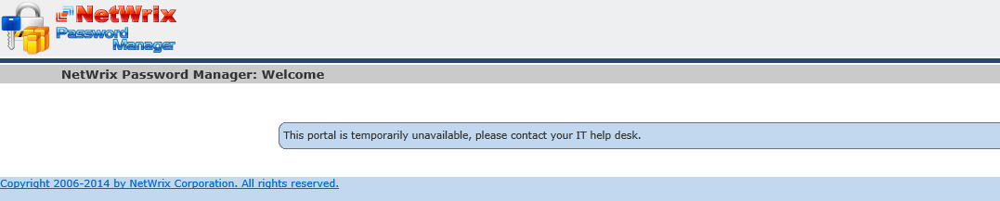
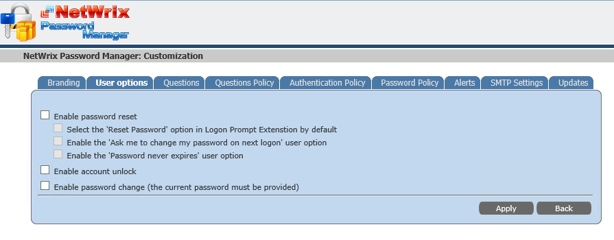
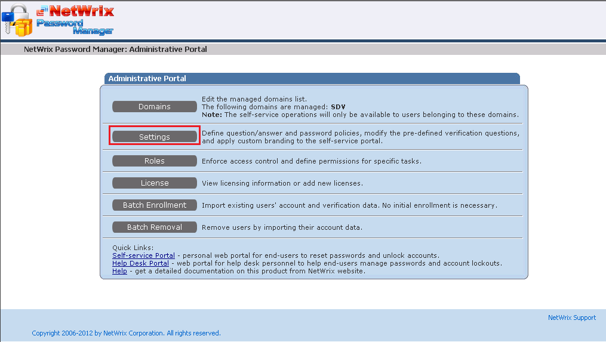
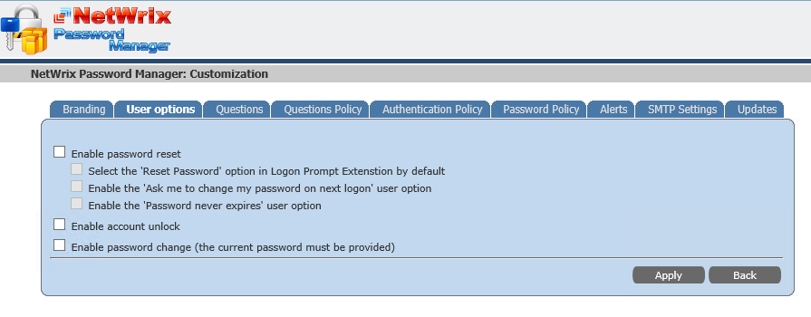
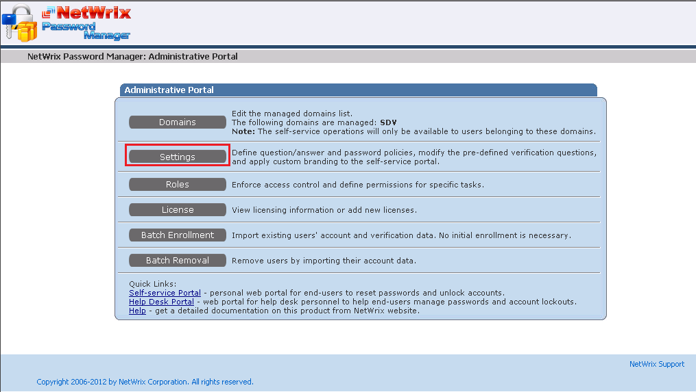

Self-Service portal of Password Manager shows the following message
This portal is temporarily unavailable, please contact your IT help desk.

Password Manager allows to select options that are available for on the Self-Service portal. If all options are disabled, then the portal shows the "This portal is temporarily unavailable, please contact your IT help desk." message. This configuration is done on the Administrative portal, in Settings - User options tab 
To resolve this you need to enable at least one option for the Self-service. 1. Navigate to the Administrative portal, and go to Settings  2. Then select the User options tab and enable options you need 3. Click Apply
Password Manager allows to select options that are available for on the Self-Service portal. If all options are disabled, then the portal shows the "This portal is temporarily unavailable, please contact your IT help desk." message. This configuration is done on the Administrative portal, in Settings - User options tab 
To resolve this you need to enable at least one option for the Self-service. 1. Navigate to the Administrative portal, and go to Settings  2. Then select the User options tab and enable options you need 3. Click Apply